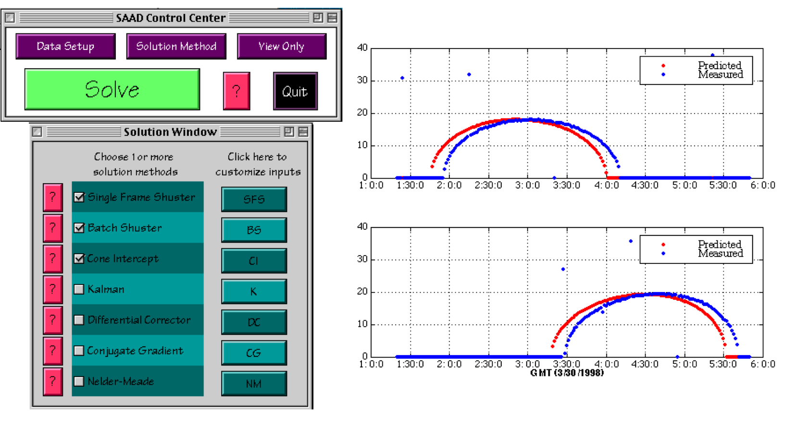

| What's Included |  |
The Spin Axis Attitude Module is an add-on module to the Spacecraft Control Toolbox that adds extra functionality.
PSS has experience doing spin axis attitude determination on many communications satellite missions. Spin axis attitude determination uses single axis sun sensors and infrared horizon sensors to determine the angle of the spin axis in the inertial frame. This information is used for pointing the rocket engines used for orbit changes.
The SAAD Package can process any combination of data that is available on your system. It accepts horizon sensor inputs as either leading and trailing edge times or as dihedral angles. Midscan, leading or trailing dihedral angles are handled with equal ease. The data can even be processed without dihedral angles or without chordwidths. This feature was useful on a recent mission when a temporary glitch made the leading edge times, and therefore the chordwidths, unavailable. We were able to continue attitude determination using only the sun angle and the trailing edge dihedral angles.
We've used this package on four missions for three different types of spacecraft with excellent results! On the most recent mission our predictions, from all of our algorithms, matched post apogee burn attitude predictions to within two tenths of a degree.

Features
- Differential-corrector, Conjugate Gradient and Nelder-Meade attitude determination algorithms.
- Iterated extended Kalman Filter for real-time applications.
- Cone intercept, and chordwidth/dihedral angle attitude determination methods.
- Singular value decomposition least squares solver for ill-conditioned data.
- Data quality evaluation toolsv
- Horizon sensor dynamics models.
- Graphical user interface that frees you from coding.
For more information, visit the product webpage at http://psatellite.com/sct/spin_axis.php